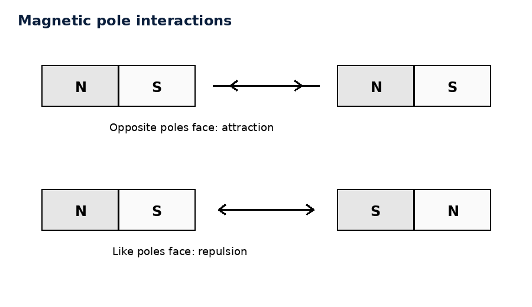
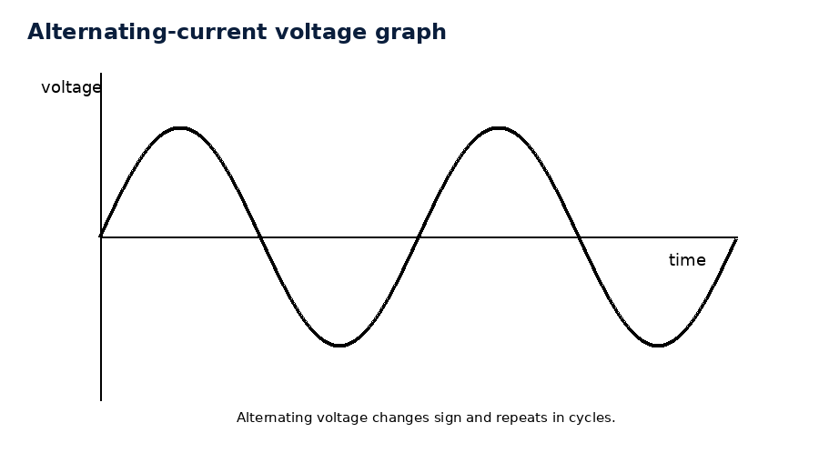
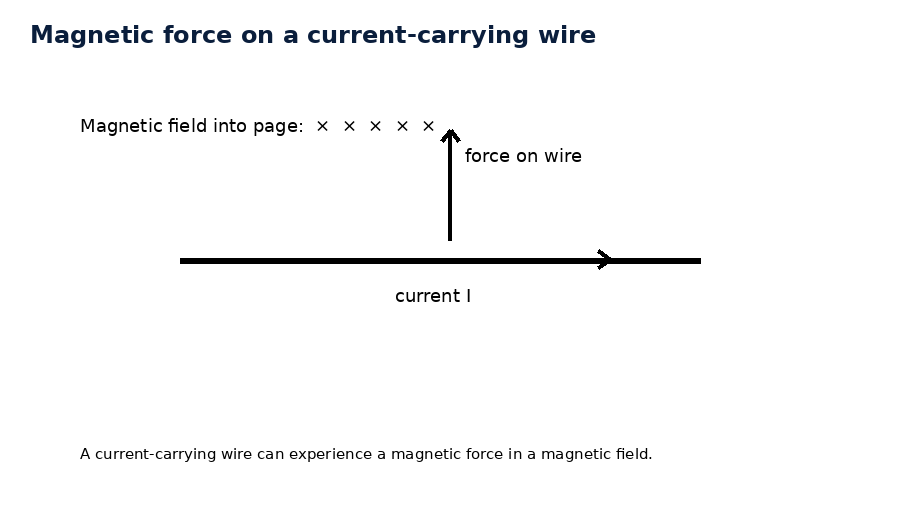
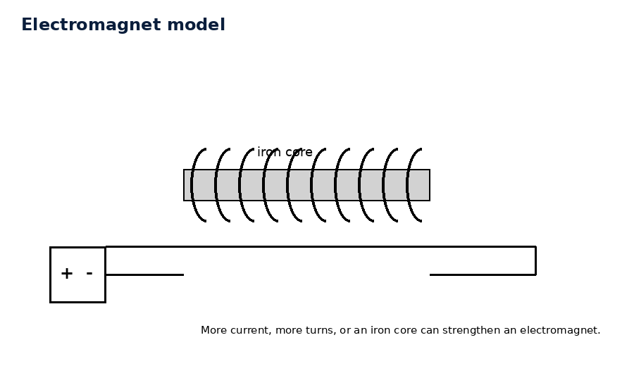
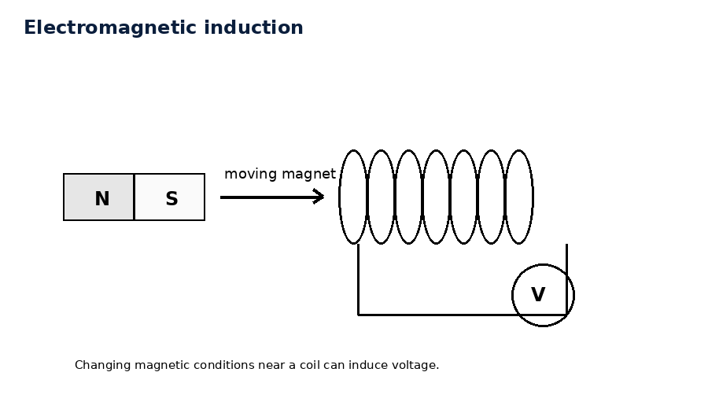
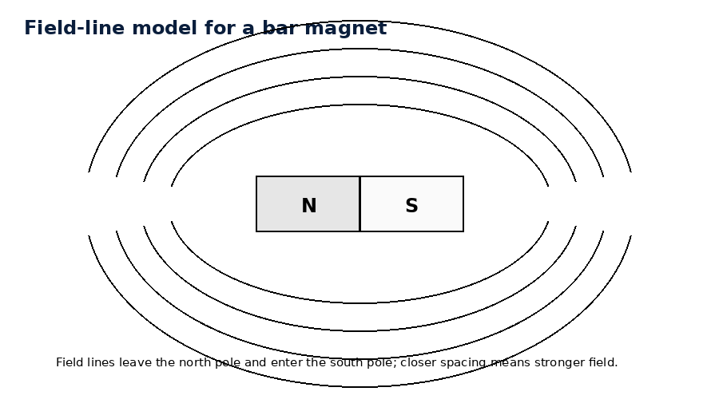
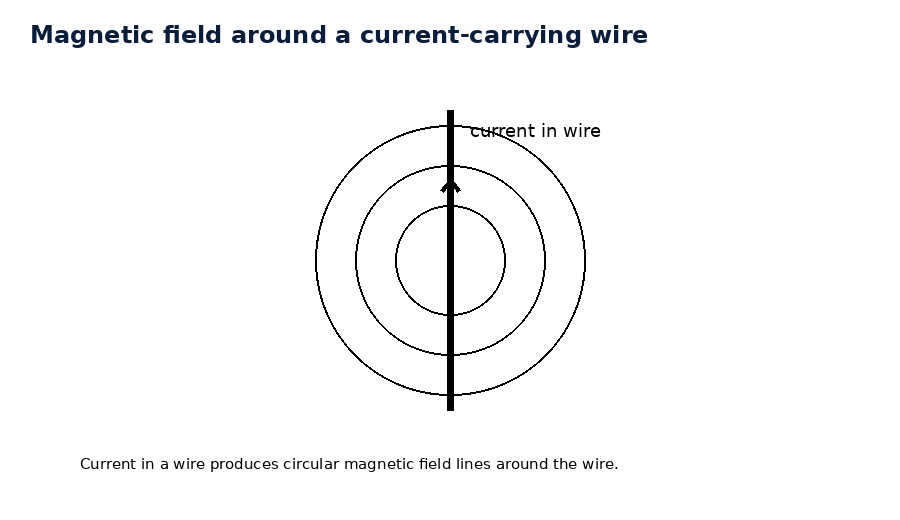
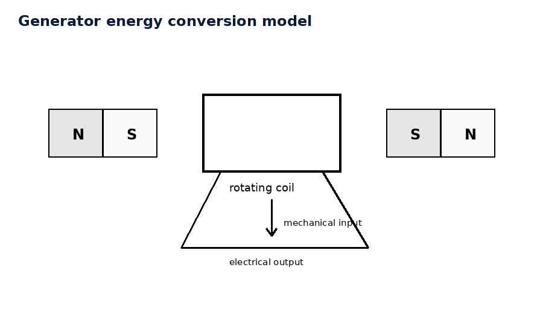
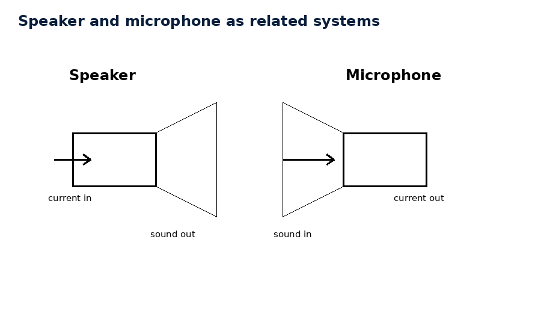

Conceptual Physics — Unit 8 Assessment Plan
Unit 8: Magnetism and Electromagnetism
Essential Standard
Students will analyze magnetism and electromagnetism by explaining magnetic poles, magnetic fields, magnetic domains, the relationship between electric current and magnetic fields, electromagnets, magnetic forces on moving charges and current-carrying wires, electromagnetic induction, generators, alternating current, and modern electromagnetic systems.
Section 8.1: Magnetism and Magnetic Fields
Textbook Sections: 24.1–24.4
Learning Target: Students will explain magnetic poles, magnetic fields, and magnetic domains using field models and everyday magnetic interactions.
- I can explain that magnets have north and south poles.
- I can describe how like magnetic poles repel and unlike magnetic poles attract.
- I can explain that magnetic field lines show the direction and relative strength of a magnetic field.
- I can explain why magnetic poles are not isolated as single north or south poles.
- I can describe magnetic domains and how their alignment affects whether a material acts like a magnet.
- I can interpret simple magnetic field diagrams around bar magnets and pairs of magnets.
Section 8.2: Electricity and Magnetism
Textbook Sections: 24.5
Learning Target: Students will explain how electric current produces magnetic fields and how changing electric and magnetic fields are connected.
- I can explain that moving electric charges create magnetic fields.
- I can describe the magnetic field around a current-carrying wire.
- I can explain how a compass can detect a magnetic field produced by current.
- I can compare magnetic fields around a straight wire, loop, and coil.
- I can explain why electricity and magnetism are connected parts of electromagnetism.
- I can interpret simple diagrams showing current direction and magnetic field direction.
Section 8.3: Electromagnets and Magnetic Forces
Textbook Sections: 24.6, 24.7
Learning Target: Students will analyze electromagnets and magnetic forces on moving charges and current-carrying wires.
- I can explain that a current-carrying coil of wire is an electromagnet.
- I can describe how increasing current or coil turns affects electromagnet strength.
- I can explain how an iron core can strengthen an electromagnet.
- I can explain that moving charges can experience magnetic forces.
- I can describe how magnetic forces act on current-carrying wires.
- I can connect electromagnets to motors, speakers, maglev systems, relays, and lifting magnets.
Section 8.4: Generators and Alternating Current
Textbook Sections: 25.3
Learning Target: Students will explain how generators use electromagnetic induction to convert mechanical energy into electrical energy and why alternating current changes direction.
- I can explain that electromagnetic induction can produce voltage when magnetic conditions change.
- I can describe how rotating a coil in a magnetic field can induce voltage.
- I can explain that a generator converts mechanical energy into electrical energy.
- I can explain why the output of a common generator is alternating current.
- I can interpret a simple voltage-time graph for alternating current.
- I can compare the basic idea of a motor and a generator.
Section 8.5: Modern Electromagnetic Systems
Textbook Sections: synthesis/application
Learning Target: Students will apply magnetism, electromagnets, magnetic forces, and electromagnetic induction to real-world technologies and systems.
- I can explain how electromagnetic systems use energy transformations.
- I can describe how generators, motors, transformers, speakers, microphones, maglev systems, MRI, and electric meters use electromagnetism.
- I can explain why energy input is required for electrical energy output.
- I can critique claims that a device produces energy from magnetism alone.
- I can analyze a modern electromagnetic system using fields, forces, current, induction, and energy conservation.
- I can use evidence to defend whether a proposed electromagnetic model makes sense.
Unit 8 Formula / Symbol Limit
This unit remains conceptual before computational. The following formulas and symbolic relationships are enough for the entire unit.
- Magnetic force on a moving charge: $F=qvB$
- Magnetic force on a current-carrying wire: $F=BIL$
- Magnetic field strength from force on a moving charge: $B=\frac{F}{qv}$
- Magnetic field strength from force on a wire: $B=\frac{F}{IL}$
- Faraday’s Law concept relationship: induced voltage increases when the rate of magnetic-field change increases
- Transformer relationship: $\frac{V_s}{V_p}=\frac{N_s}{N_p}$
- Power relationship for ideal transformers: $P_{in}\approx P_{out}$
- Electric power: $P=IV$
No more than these eight formulas/symbolic relationships should be required for Unit 8 assessments.
Learning Ladder
| Rung | I Can Statement | Science Practice | DOK | Level |
|---|---|---|---|---|
| 8 | I can design, defend, or critique a complete electromagnetic-system model for an unfamiliar real-world technology using fields, forces, current, induction, energy transformations, formulas, and evidence. | Construct Explanations / Argue from Evidence | DOK 4 | Above |
| 7 | I can compare competing explanations of magnetic fields, electromagnets, magnetic forces, generators, transformers, or electromagnetic devices and justify which explanation better fits the evidence. | Analyze and Evaluate Models | DOK 4 | Above |
| 6 | I can connect field diagrams, current diagrams, force diagrams, induction models, formulas, and written scenarios to explain electromagnetic behavior. | Use Models / Explain Phenomena | DOK 3 | Essential |
| 5 | I can identify and correct misconceptions about magnets, magnetic fields, domains, electromagnets, magnetic forces, induction, generators, or energy in electromagnetic systems. | Critique Reasoning | DOK 3 | Essential |
| 4 | I can calculate magnetic force, magnetic field strength, transformer voltage, or electric power in simple situations and interpret the answer in context. | Use Mathematical Thinking | DOK 2 | Essential |
| 3 | I can interpret magnetic field diagrams, domain diagrams, electromagnet diagrams, magnetic-force diagrams, generator diagrams, and AC graphs. | Develop and Use Models | DOK 2 | Essential |
| 2 | I can define and recognize key terms such as magnetic pole, magnetic field, domain, electromagnet, magnetic force, induction, generator, alternating current, and transformer. | Identify Patterns / Use Vocabulary | DOK 1 | Essential |
| 1 | I can recognize whether a situation involves magnetic attraction or repulsion, a magnetic field, current-produced magnetism, magnetic force, induction, or electromagnetic technology. | Observe and Classify | DOK 1 | Essential |
Format: 3–5 minute warm-up, quick check, image prompt, vocabulary check, mini-whiteboard response, card sort, field-diagram labeling, technology sort, or exit ticket
Purpose: Check whether students can recognize basic magnetism and electromagnetism vocabulary, identify magnetic interactions, classify field models, and distinguish magnets, electromagnets, generators, motors, transformers, and induction.
Assessment Ideas
- Magnetic Pole Snapshot Sort Can Be Assessed After Unit 8, Section 8.1 — Students view sketches of bar magnets near each other and classify each interaction as attraction, repulsion, or not enough information.
- Magnetic Field Diagram Labeling Can Be Assessed After Unit 8, Section 8.1 — Students label magnetic field lines, north pole, south pole, field direction, and stronger/weaker field regions on simple diagrams.
- Electromagnet or Permanent Magnet? Can Be Assessed After Unit 8, Section 8.3 — Students classify examples such as a refrigerator magnet, junkyard lifting magnet, doorbell, relay, and speaker as using permanent magnets, electromagnets, or both.
- Motor, Generator, or Transformer? Can Be Assessed After Unit 8, Section 8.5 — Students sort device descriptions based on whether the system primarily converts electrical energy to motion, motion to electrical energy, or changes voltage.
What this tells the teacher:
Students who struggle here need more support with magnetism vocabulary, field models, and the difference between permanent magnets, electromagnets, motors, generators, and transformers before moving into induction or system-level reasoning.
Format: Exit ticket, diagram interpretation, short calculation, field model, graph interpretation, ranking task, partner check, data table, or whiteboard response
Purpose: Check whether students can apply simple formulas, interpret field diagrams, compare electromagnet strength, and connect magnetic forces or induction models to physical meaning.
Assessment Ideas
- Magnetic Field Pattern Task Can Be Assessed After Unit 8, Section 8.1 — Students interpret field-line diagrams for one magnet or two interacting magnets and identify stronger field regions and likely force direction.
- Electromagnet Strength Comparison Can Be Assessed After Unit 8, Section 8.3 — Students compare coils with different current, number of turns, and core materials to rank electromagnet strength.
- Magnetic Force Calculation Can Be Assessed After Unit 8, Section 8.3 — Students use $F=qvB$ or $F=BIL$ in a simple situation and interpret what changes if speed, current, wire length, or magnetic field strength changes.
- AC Generator Graph Interpretation Can Be Assessed After Unit 8, Section 8.4 — Students interpret a voltage-time graph for alternating current and identify one cycle, zero voltage points, positive/negative voltage, and how faster rotation affects frequency.
What this tells the teacher:
Students at this level can usually interpret magnetic diagrams and simple calculations. Errors reveal whether students are confusing poles with charges, field lines with physical strings, permanent magnets with electromagnets, motors with generators, or alternating current with changing battery strength.
Format: Constructed response, misconception analysis, CER, diagram critique, graph explanation, ranking explanation, gallery walk, or group whiteboard defense
Purpose: Check whether students can reason strategically, explain cause and effect, connect multiple representations, and correct common misconceptions about magnetic fields, electromagnets, induction, and electromagnetic systems.
Assessment Ideas
- Magnetic Monopole Misconception Response Can Be Assessed After Unit 8, Section 8.1 — Students respond to the claim, “If you cut a magnet in half, one piece becomes only north and the other becomes only south,” and revise it using magnetic domain and pole reasoning.
- Current Creates Magnetic Field Explanation Can Be Assessed After Unit 8, Section 8.2 — Students explain how a compass can detect current in a nearby wire and why the effect disappears when the circuit is open.
- Electromagnet Design Explanation Can Be Assessed After Unit 8, Section 8.3 — Students explain why increasing the number of coil turns, increasing current, or adding an iron core can make an electromagnet stronger.
- Generator Energy Misconception Response Can Be Assessed After Unit 8, Section 8.4 — Students critique the claim, “A generator creates electrical energy from nothing,” and revise it using mechanical energy input, induction, and energy conversion.
What this tells the teacher:
This level shows whether students understand the physics behind field diagrams and device models. These tasks are useful for deciding who needs reteaching on magnetic domains, current-produced fields, electromagnet strength, induction, or energy conservation in generators.
Format: Performance task, extended response, investigation reflection, modeling task, critique task, engineering analysis, or strategy defense
Purpose: Check whether students can synthesize magnetic field diagrams, electromagnet models, current diagrams, induction models, force reasoning, energy-transfer models, and real-world evidence in unfamiliar electromagnetic systems.
Assessment Ideas
- Build an Electromagnet Model from Evidence Can Be Assessed After Unit 8, Section 8.3 — Students receive data for different coils and build a model explaining how current, number of turns, and core material affect electromagnet strength.
- Design a Magnetic Separation or Lifting System Can Be Assessed After Unit 8, Section 8.3 or 8.5 — Students design or critique an electromagnetic system for sorting metals, lifting scrap, locking a door, or moving an object.
- Generator and Energy Conversion Defense Can Be Assessed After Unit 8, Section 8.4 — Students create a complete model for a generator that includes motion, magnetic field change, induced voltage, current, and energy input/output.
- Modern Electromagnetic System Critique Can Be Assessed After Unit 8, Section 8.5 — Students evaluate a claim about maglev trains, MRI, wireless charging, speakers, microphones, transformers, or “magnet-powered” devices using fields, current, induction, force, and energy conservation.
What this tells the teacher:
DOK 4 tasks show whether students can transfer magnetism and electromagnetism understanding to unfamiliar systems and defend reasoning using fields, forces, current, induction, diagrams, formulas, and evidence.
Assessment is designed for a 45-minute time limit.
The Unit 8 summative will be created as one consolidated HTML file with six versions of the assessment, an answer key, and a standardized two-page answer sheet. Test questions will be printed without workspaces so students use the answer sheet for responses and formula work.
Assessment File Structure
Single summative file: ../summative/unit8_summative_assessment/unit8_summative_assessment.html
The summative file will include six versions of the assessment. Each version should assess the same Unit 8 standards, DOK levels, vocabulary expectations, misconception checks, diagram skills, field-modeling skills, electromagnet skills, induction-modeling skills, device-analysis skills, and formula skills, but with varied numbers, contexts, diagrams, wording, and answer order.
Recommended Student Assessment Structure
Questions 1–16: Multiple Choice — Students answer on the standardized bubble sheet.
- 5 Questions DOK 1 — Vocabulary, magnetic pole recognition, magnetic field features, domain concepts, current-produced magnetism, electromagnet/device classification, and induction language.
- 6 Questions DOK 2 — Interpreting magnetic field diagrams, comparing electromagnet strength, applying magnetic force relationships, interpreting generator diagrams, reading AC graphs, and using transformer or power relationships.
- 4 Questions DOK 3 — Analyzing misconceptions, connecting current to magnetic fields, explaining electromagnet strength, comparing motors and generators, explaining induction, and choosing the best energy-conversion explanation.
- 1 Question DOK 4 — Evaluating a model, critique, investigation-based reasoning, electromagnetic-device design, or choosing the best evidence-supported explanation.
Questions 17–20: Free Response / Formula and Reasoning Questions — These are the last four questions of each assessment version. Students complete these on the back side of the standardized answer sheet in four numbered quadrants.
- Question 17: Formula / magnetic force or magnetic field reasoning using $F=qvB$, $F=BIL$, $B=\frac{F}{qv}$, or $B=\frac{F}{IL}$.
- Question 18: Formula / transformer, power, or generator-energy reasoning using $\frac{V_s}{V_p}=\frac{N_s}{N_p}$, $P_{in}\approx P_{out}$, or $P=IV$.
- Question 19: Magnetic field diagram, domain model, electromagnet model, magnetic-force model, or current-produced-field explanation.
- Question 20: Generator model, electromagnetic induction explanation, modern electromagnetic system critique, device-design task, or short CER-style reasoning task.
Answer Key and Answer Sheet Pages
After the six assessment versions, the summative file will include an answer key.
The final two pages of the file will be a standardized answer sheet:
- Answer Sheet Page 1: Assessment Name, Student Name, bubble area for selecting version number, and bubbles for multiple-choice questions 1–16.
- Answer Sheet Page 2: Prints on the back of Page 1 and is divided into four quadrants labeled 17, 18, 19, and 20 for the free-response formula and reasoning questions.
Question-Type Balance
- Standard wording: about 5 questions
- Inverted wording: about 5 questions
- Context-rich wording: about 6 questions
- Vocabulary / diagram / model-based wording: about 4 questions
Assessment Bank Note
The assessment bank should remain open-response, short-answer, diagram-based, field-model-based, electromagnet-model-based, generator-model-based, technology-critique-based, and explanation-based. Bank items should not be written as multiple-choice questions. Selected bank items can later be adapted into multiple-choice summative questions with misconception-based distractors for questions 1–16.
Scoring Recommendation
Suggested weighting: Multiple Choice: 16 points; Free Response: 16 points total, 4 points per quadrant; Total: 32 points.
- 4: Accurate answer, clear reasoning, correct vocabulary, correct formula use or model, and complete explanation.
- 3: Mostly correct with minor error or missing detail.
- 2: Partial understanding shown, but reasoning, diagram, graph, field model, or calculation is incomplete.
- 1: Minimal correct physics shown.
- 0: Blank, unrelated, or no meaningful evidence of understanding.
A — Highly Proficient
The student demonstrates a strong and flexible understanding of Unit 8 concepts. Work is accurate, well-organized, and supported by clear reasoning. The student can explain magnetic poles, magnetic fields, magnetic domains, electric currents creating magnetic fields, electromagnets, magnetic forces, electromagnetic induction, generators, alternating current, transformers, and modern electromagnetic systems in familiar and unfamiliar situations. The student can interpret field diagrams, force diagrams, electromagnet models, generator diagrams, AC graphs, and electromagnetic-device claims, use formulas appropriately, critique models, and defend claims using evidence.
B — Proficient
The student demonstrates solid understanding of the essential Unit 8 concepts. Most work is accurate, and the student can complete standard and moderately complex tasks independently. The student can identify magnetic interactions, interpret magnetic field diagrams, explain domains, describe how current creates magnetic fields, explain how electromagnets work, recognize magnetic-force situations, describe induction, and explain basic generator or transformer behavior. Explanations are generally clear, though they may lack some precision or depth.
C — Developing Proficiency
The student demonstrates partial but passable understanding of Unit 8 concepts. The student can complete many routine tasks but may need support with magnetic field direction, domain alignment, electromagnet strength, current-produced magnetic fields, magnetic force reasoning, induction, alternating current, transformer relationships, or energy conversion in electromagnetic systems. Work may contain errors or incomplete explanations, but there is enough evidence that the student understands the main ideas.
Not Yet — Insufficient Evidence
The student does not yet demonstrate sufficient understanding of the essential Unit 8 concepts. Work shows major errors, missing reasoning, confusion between electric and magnetic forces, confusion between poles and charges, weak field-diagram interpretation, incorrect formula use, incorrect generator or transformer reasoning, or weak connections between electromagnetic models and evidence. The student may need reteaching, additional practice, or reassessment to demonstrate proficiency.
Strictly Assessment Bank
This bank is organized by DOK so future formative versions and summative versions can be assembled quickly. The bank should remain open-response, short-answer, diagram-based, field-model-based, electromagnet-model-based, generator-model-based, technology-critique-based, and explanation-based. Bank questions should not be multiple choice.
Figure naming convention for future assessment files: use unit8-dok#-#-problem#.png or descriptive names in the figures/ folder.
Match each term to its definition.
Terms: 1. Magnetic field 2. Magnetic domain 3. Electromagnet 4. Electromagnetic induction 5. Alternating current
Definitions:
- A small region in a magnetic material where many atomic magnetic effects are aligned
- A current that repeatedly reverses direction
- The region around a magnet or current where magnetic effects can be detected
- A magnet produced by electric current in a coil of wire
- The production of voltage caused by changing magnetic conditions
Which term best matches this definition?
“A device that converts mechanical energy into electrical energy using electromagnetic induction.”
State whether each pair of magnetic poles attracts, repels, or cannot be determined.
- north and north
- south and south
- north and south
- north pole and unmarked end of a magnet

Complete the sentence using the best vocabulary term: A material becomes strongly magnetic when many magnetic __________ line up in the same direction.
In your own words, explain why a magnet does not have only one isolated pole.
Identify whether each example uses a permanent magnet, electromagnet, or both.
- refrigerator magnet
- junkyard lifting magnet
- simple electric motor
- compass needle
- speaker
State whether each description refers more directly to a motor, generator, transformer, or electromagnet.
- changes voltage using coils
- converts electrical energy into motion
- converts motion into electrical energy
- becomes magnetic when current flows
A compass needle deflects near a wire only when the circuit is closed. Which idea does this demonstrate?
Identify whether each situation involves magnetic attraction/repulsion, current-produced magnetism, magnetic force on moving charge, or induction.
- A compass points north.
- A current-carrying wire affects a nearby compass.
- A magnet moving into a coil produces voltage.
- Charged particles curve in a magnetic field.
Classify each as direct current, alternating current, or not enough information.
- current from a typical household outlet
- current from a battery-powered flashlight
- current that reverses direction repeatedly
- current described only as “large”
Which vocabulary term describes a graph of voltage that rises, falls, reverses direction, and repeats over time?

In your own words, explain the difference between a permanent magnet and an electromagnet.
A moving charge of $2\text{ C}$ travels at $3\text{ m/s}$ through a magnetic field of $4\text{ T}$. Determine the magnetic force when the motion is perpendicular to the field.

A wire carrying $5\text{ A}$ of current is $0.20\text{ m}$ long and is placed perpendicular to a $0.40\text{ T}$ magnetic field. Determine the magnetic force on the wire.

A magnetic force of $12\text{ N}$ acts on a wire carrying $3\text{ A}$ of current through a $2\text{ m}$ length of wire. Determine the magnetic field strength.
A magnetic force of $6\text{ N}$ acts on a charge of $2\text{ C}$ moving at $3\text{ m/s}$ perpendicular to the field. Determine the magnetic field strength.
A transformer has 100 turns on the primary coil and 500 turns on the secondary coil. If the primary voltage is $12\text{ V}$, determine the secondary voltage.

A transformer has 800 turns on the primary coil and 200 turns on the secondary coil. Is it a step-up or step-down transformer? Explain using the turn ratio.
A device operates at $12\text{ V}$ and $3\text{ A}$. Determine the electric power used by the device.
An ideal transformer has $P_{in}=60\text{ W}$. Estimate $P_{out}$ and explain what “ideal” means in this situation.
A coil has 20 turns and carries 1 A of current. A second coil has 40 turns and carries 1 A of current. Compare the likely magnetic strength of the two coils.

A student moves a bar magnet quickly into a coil, then slowly into the same coil. Compare the induced voltage in the two cases.

A generator voltage graph completes 4 cycles in 2 seconds. Determine the frequency of the alternating voltage.
A field diagram shows field lines packed close together near the poles of a bar magnet and farther apart away from the magnet. Explain what the spacing tells you about field strength.

A student says, “If you cut a magnet in half, one half becomes only north and the other half becomes only south.” Explain the misconception and revise the statement.
A student says, “Magnetic field lines are real strings coming out of a magnet.” Critique the statement and revise it using field-model language.
A compass near a wire deflects when current flows. Explain what this shows about the relationship between electricity and magnetism.

A student says, “An electromagnet is strong because the wire itself turns into a permanent magnet.” Critique the statement and revise it using current, coils, and domains.
A junkyard crane uses an electromagnet to lift scrap metal. Explain why turning off the current allows the metal to fall.
A student says, “A moving charge in a magnetic field speeds up because the magnetic field gives it energy.” Critique the statement and revise it using magnetic force direction.
A student says, “A generator creates energy.” Explain the misconception and revise the statement using energy conversion.

A student compares a motor and generator and says, “They are unrelated devices.” Explain how they are related and how their energy transformations differ.
A student moves a magnet into a coil and then holds it still. The meter needle moves only while the magnet is moving. Explain why.
A student says, “Alternating current means the electrons disappear and reappear.” Critique the statement and revise it using direction of charge motion.
A transformer changes voltage in a power line. Explain why changing voltage does not mean the transformer creates extra energy.
A maglev train floats above a track. Explain how magnetic forces can reduce contact friction while still requiring energy input.
A student creates a domain model for a piece of iron before and after it becomes magnetized.
- Describe what the domains should look like before magnetization.
- Describe what the domains should look like after magnetization.
- Explain how the model accounts for magnetic behavior.
- Identify one piece of evidence that would support the model.

Design a short investigation that maps the magnetic field around a bar magnet.
Your response should include:
- Materials
- Procedure
- What students should observe or measure
- How the evidence connects to field direction and field strength
- One likely misconception and how the investigation addresses it
A group wants to build a stronger electromagnet.
- Identify at least three design changes they could test.
- Explain why each change should affect strength.
- Describe what data they should collect.
- Explain how they should decide which design is best.
A student claims, “The more iron you add to an electromagnet, the strength will increase forever.”
- Critique the claim.
- Explain the role of magnetic domains in the iron core.
- Explain why saturation matters.
- Write a corrected explanation.
A student designs a generator by placing a coil near a magnet but keeping both completely still.
- Critique the design.
- Explain what must change for induction to occur.
- Revise the design in words or with a sketch description.
- Explain the energy transformation in the corrected design.
Design a short investigation that demonstrates electromagnetic induction.
Your response should include:
- Materials
- Procedure
- What students should change
- What students should observe on a meter or bulb
- How the evidence supports induction
- One likely misconception and how the investigation addresses it
A student says, “A transformer is a machine that makes free power by increasing voltage.”
Evaluate the statement using voltage, current, power, coil turns, and energy conservation.
A company advertises a flashlight that runs forever because it contains powerful magnets.
- Identify the physics claim being made.
- Explain why magnets alone do not provide unlimited energy.
- Explain what energy input would be needed if induction is involved.
- Describe what evidence would be required to test the claim.
A group compares a speaker and a microphone.
Explain how each device uses magnetism and current, identify how their energy transformations are related, and describe why one can be thought of as the reverse of the other.

A transportation team proposes using magnetic levitation for a train.
Use magnetic forces, energy input, contact friction, air resistance, and system design to evaluate the proposal. Identify one benefit and one limitation.
A student creates an AC generator graph but shows the voltage staying positive for the entire rotation.
- Critique the graph.
- Explain why voltage changes direction in a simple rotating-coil generator.
- Describe what one complete cycle should look like.
- Revise the model in words.
A website claims that a magnetic bracelet can strongly improve health by “re-aligning the body’s magnetic fields.”
- Identify the physics claim being made.
- Explain what evidence would be needed to support the claim scientifically.
- Use magnetic field and force ideas to critique the claim.
- Explain why scientific testing matters for magnetism claims.